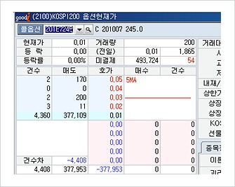

선물옵션 자금관리

현재 계좌의 예탁액이 500만원이고, 201E7245 매수 100계약 보유상태에서 출금하고 싶지만 미결제를 청산할 수 있는 방법을 알아보죠.

왼쪽 현재가 화면에서 볼 수 있듯이 미결제로 보유하고 있는 콜옵션종목은 거래량도 거의 없고, 매도주문을 내놓아도 매도잔량만 쌓일 뿐 체결될 가능성이 거의 없습니다.
이러한 상태에서 예탁액을 출금하고 싶지만, 1,500만원 미만이므로 미결제가 있는 상태에서는 출금이 안됩니다.
이러한 경우 예탁액 500만원을 출금하기 위해서는 체결여부와 상관없이 보유한 종목 201E7245 매수 100계약의 청산주문인 매도주문 100계약을 0.01P에 입력하면 즉시 예탁액을 출금할 수 있습니다.